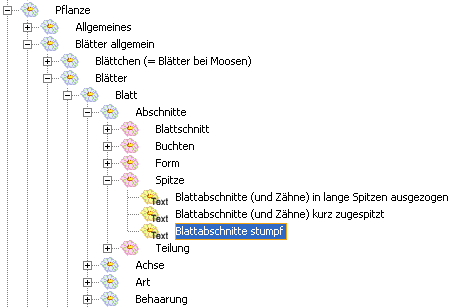
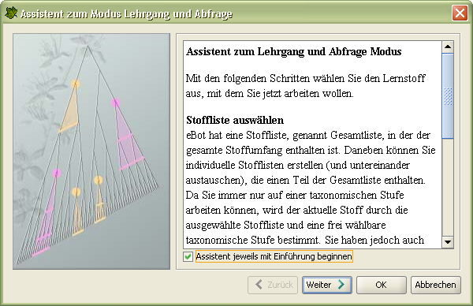
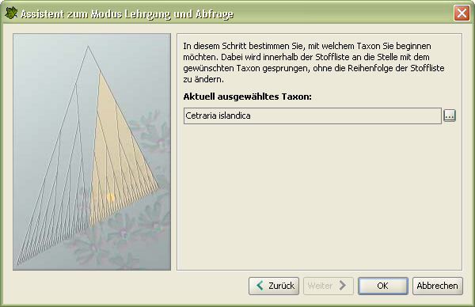
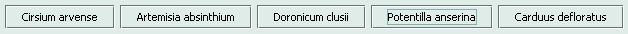

Öffnen Sie das Dialogfenster Assistent zur Modus-Auswahl.
Selektieren Sie das Register Lernen.
Wählen Sie Lehrgang und Abfrage.
Klicken Sie doppelt auf den gewählten Eintrag, oder klicken Sie einmal auf OK (Alt+U).
Der Modus Lehrgang und Abfrage wird im Hauptfenster geöffnet.
Hauptfenster
Das Hauptfenster des Modus Lehrgang und Abfrage ist in sechs verschiedene Bereiche gegliedert (von oben nach unten, links nach rechts).
Der Menübalkenganz oben.
Die Symbolleistefür Einstellung und Navigation unterhalb des Menübalkens.
Der Balken mit einem Ausschnitt der Taxonomie, beginnend mit dem aktuellen Taxon.
Der Bilderbereichlinks unterhalb des Ausschnittes der Taxonomie.
Der Informationsbereich des Lehrgangsresp. Eingabebereich der Abfragerechts unterhalb des Ausschnittes der Taxonomie.
Zuunterst die Statusleistemit den aktuellen Einstellungen.
Der Menübalken ist für allgemeine Aktionen gedacht, die das Hauptfenster betreffen und in den meisten Modi verwendet werden können. Die Symbolleiste ermöglicht die Einstellung des Lernstoffs. Der Ausschnitt der Taxonomie zeigt alle übergeordneten Taxa des aktuell ausgewählten Taxons in aufsteigender, hierarchischer Reihenfolge. Der Bilderbereich dient zur Auswahl und Darstellung von Bildern zum gewählten Taxon. Der Informationsbereich zeigt die Eigenschaften des gewählten Taxons resp. ermöglicht eine Abfrage der Eigenschaften. Die Statusleiste stellt die aktuellen Einstellungen dar.
Symbolleiste und Statusleiste
Unterhalb des Hauptmenüs befindet sich eine Symbolleiste, mit der die aktuellen Einstellungen geändert werden können. Am unteren Ende des Hauptfensters befindet sich die Statusleiste, auf der die aktuellen Einstellungen ersichtlich sind. Im folgenden werden die Schaltflächen der Symbolleiste und die Texte in der Statusleiste vorgestellt und ihre Funktion erläutert (eine genaue Beschreibung der Funktion finden Sie im Kapitel Assistent zum Lehrgang und Abfragemodus):
Jedes Symbol auf der Symbolleiste hat einen entsprechenden Text an derselben Position in der Statusleiste.
Die erste Schaltfläche erlaubt es, aus den definierten Stofflisteneine als aktuelle Stoffliste auszuwählen. Die im folgenden beschriebenen drei Schaltflächen beziehen sich alle auf diese aktuelle Stoffliste und erlauben es, den Lernstoff einzuschränken.
Diese Schaltfläche dient zur Änderung des Stoffbereichs festlegen.
Mit Hilfe dieser Schaltfläche lässt sich die taxonomische Stufe ändern.
Diese Schaltfläche dient zur Änderung der Reihenfolge.
 Das aktuell ausgewählte Taxon kann mit Hilfe dieser Schaltfläche festgelegt werden.
Das aktuell ausgewählte Taxon kann mit Hilfe dieser Schaltfläche festgelegt werden.
Mit den beiden Symbolen am Ende der Symbolleiste wird die Position des aktuellen Taxons im Lernstoff geändert.
Ausschnitt der Taxonomie
Das aktuelle Taxon (hier als Beispiel Medicago sativa ) und all seine übergeordneten Taxa werden als Ausschnitt der Taxonomie unterhalb der Symbolleisteangezeigt. Sollte zu wenig Platz vorhanden sein, um die ganze Taxonreihe darzustellen, wird am rechten Ende eine zusätzliche Schaltfläche angezeigt, mit der die nicht sichtbaren Taxa eingeblendet werden können.
Beachten Sie, dass der Ausschnitt der Taxonomie nicht nur vom aktuellen Taxon abhängig ist, sondern ebenfalls von der aktuellen Stoffliste beeinflusst wird. Es werden nur jene taxonomischen Stufen angezeigt, die in der Stoffliste enthalten sind.
Bilderbereich
Der Bilderbereich links im Hauptfensters unterhalb des Ausschnitts der Taxonomie stellt die Bilder des aktuellen Taxons dar. Die Bilder werden in vier verschiedenen Kategorien als Register dargestellt: Herbar, Portrait, Detail und Standort. Die Kategorie Herbar enthält Bilder von Herbarpflanzen (gepresste Pflanzen). Hier gilt es zu beachten, dass sich die Farben bei einigen Arten verändert haben. Die Kategorie Portrait zeigt die Pflanzen in einer Freilandaufnahme. In der Kategorie Detail werden wichtige Einzelheiten des Taxon vergrössert dargestellt. Die Kategorie Standort zeigt den Standort, an dem dieses Taxon (meist) vorkommt, daraus können oft die ökologischen Ansprüche des Taxons abgeleitet werden. Bei einem Wechsel des aktuellen Taxons wird das angewählte Register beibehalten.
Beachten Sie, dass nicht alle Taxa in allen vier Kategorien Bilder enthalten. Entsprechende, leere Register werden grau dargestellt. Es ist dennoch möglich, ein Register ohne Bilder anzuwählen. Das ermöglicht, dass Sie sich beim Vor- und Zurückblättern durch die Taxa des Lernstoffs auf eine Bildkategorie konzentrieren können.
Im oberen Teil der Bildfläche, unterhalb der Register, werden sämtliche Bilder einer Kategorie als Miniaturen dargestellt. Falls nicht alle Platz haben sollten, werden ein oder zwei Schaltflächen mit Bildlaufpfeilen dargestellt (im Bild ein Rechtspfeil). Ein Klick auf eine solche Schaltfläche verschiebt die Reihe der Miniaturen in die entsprechende Richtung. Ein Klick auf eine Miniatur übernimmt das Bild als aktuelles Bild.
Unterhalb der Miniaturen wird das aktuelle Bild gross dargestellt. Die Schaltfläche mit dem Lupensymbol links neben den Miniaturen dient zur Vergrösserung resp. Verkleinerung des aktuellen Bildes. Mit dem ersten Klick, solange das Lupensymbol ein Plus enthält, wird die Bildgrösse verdoppelt, mit einem erneuten Klick (Lupensymbol mit Minus) wieder verkleinert.
Unterhalb des aktuellen Bildes befindet sich die zum aktuellen Bild und zum aktuellen Taxon gehörende Legende. Die Legenden sind auch für die Miniaturen sichtbar. Wenn Sie einen Moment mit der Maus über einer Miniatur verweilen, wird die entsprechende Legende in einem Hinweisfeld dargestellt.
Bitte beachten Sie, dass Legende und Hinweisfelder nicht sichtbar sind, wenn im Informationsbereich die Abfrage aktiv ist.
Informationsbereich des Lehrgangs
Der Informationsbereich des Lehrgangs ist im rechts im Hauptfensterunterhalb des Ausschnitts der Taxonomie dargestellt. Mit einem Klick auf das Register Abfrage am oberen Rand des Informationsbereichs aktivieren Sie den Eingabebereich der Abfrage und verdecken damit den Informationsbereich des Lehrgangs. Sie können aber den Informationsbereich des Lehrgangs wieder aktivieren, indem Sie auf das Register Lehrgang klicken.
Beachten Sie, dass der Informationsbereich des Lehrgangs standardmässig eingeblendet ist, wenn Sie die Herbar CD-ROM Version 2 aufstarten.
Der Informationsbereich des Lehrgangs enthält drei Kategorien von Informationen zum aktuellen Taxon: Morphologie, Ökologie und Weiteres. Klicken Sie auf das Register der gewünschten Kategorie am unteren Rand des Informationsbereichs, dann werden die Informationen dieser Kategorie sichtbar.
Die Kategorie Morphologie stellt die relevanten Merkmale der einzelnen Taxa dar (die relevanten Merkmale eines Taxons sind jene Merkmale, die Sie brauchen, um das Taxon innerhalb der Gesamtliste zu charakterisieren; zur Abgrenzung gegenüber Taxa, die auf der CD nicht enthalten sind, braucht es meist weitere Merkmale). Merkmale werden i.d.R. von übergeordneten Taxa auf untergeordnete Taxa vererbt. Damit Sie sehen, auf welcher taxonomischen Stufe die Merkmale zugeordnet sind, werden alle relevanten Merkmale vom aktuellen Taxon hinauf bis zur Unterklasse dargestellt. Dies hilft Ihnen, die Merkmale in Verbindung mit der taxonomischen Stufe zu erlernen.
Interessante andere Aspekte des aktuellen Taxons sind in den Kategorien Ökologie und Weiteres (z.B. Verwendung, Giftpflanzen, Medizin) ersichtlich.
Eingabebereich der Abfrage
Durch einen Klick auf das Register Abfrage am oberen Rand des Informationsbereichs aktivieren Sie den Eingabebereich der Abfrage.
Mit der Abfrage können Sie sich testen, ob Sie die Eigenschaften des aktuellen Taxons kennen. Dazu werden im Bezug auf den Lehrgang folgende Komponenten anders dargestellt:
Der Ausschnitt aus der Taxonomie wird durch ein Eingabefeld für das Taxon ersetzt.
Die Darstellung der Eigenschaften wird durch eine Eingabemaske ersetzt.
Überprüfung des Namens
So geben Sie einen Namen ein und testen, ob der Name richtig ist und Sie somit das Taxon erkannt haben:
Klicken Sie in das Eingabefeld für das Taxon unterhalb der Symbolleiste.
Geben Sie den Namen ein.
Bestätigen Sie die Eingabe mit RETURN.
Beachten Sie, dass der Name der verlangten taxonomischen Stufe entspricht. Der eingegebene Name erscheint rechts neben dem Eingabefeld mit einer Bewertung. Für die Bewertung werden Symbole verwendet, die wie folgt, hier am Beispiel von Rhododendron hirsutum , erläutert werden:
Dieser Name ist nicht richtig. |
|

|
Dieser Name ist beinahe richtig, er enthält aber einen Tippfehler oder die Endung stimmt nicht. Sie bekommen einen entsprechenden Hinweis. Geben Sie den Namen danach richtig ein. |

|
Der Name ist richtig. |
Sobald der Name richtig eingegeben worden ist, wird das Eingabefeld gesperrt.
Eingabe von Eigenschaften
Der Eingabebereich der Eigenschaften wird anstelle des Informationsbereichs des Lehrgangs angezeigt. Die Eingabefläche ist dabei in einen Auswahlbaum im oberen und einen Resultatbaum im unteren Bereich aufgeteilt. Hier können Sie Ihr Wissen testen. Dabei gehen Sie folgendermassen vor:
Wählen Sie die gewünschte Kategorie (z.B. Morphologie) am unteren Rand des Eingabebereichs aus.
Wählen Sie einen Schwierigkeitsgrad aus dem Menü am oberen Rand des Eingabebereichs.
Wählen Sie eine Eigenschaft aus dem Auswahlbaum oder suchen Sie diese mit Hilfe des Suchfeldes. Nur die Blätter (Endknoten) des Auswahlbaumes lassen sich überprüfen.
Klicken Sie auf die Schaltfläche Hinzufügen(RETURN).
Die ausgewählte Eigenschaft wird mit einem Bewertungssymbol in den Resultatbaum eingetragen. Für die Bewertung werden die folgenden Symbole verwendet:
• Diese Eigenschaft ist nicht relevant für das aktuelle Taxon. Beachten Sie, dass dies nicht zwingend heisst, dass diese Eigenschaft falsch ist. Sie kann auch richtig sein, aber eben nicht relevant. Möglicherweise ist das Merkmal auf einer höheren hierarchischen Stufe zugeordnet (und trifft dann i.d.R. auch für das aktuelle Taxon zu).
• Diese Eigenschaft ist beinahe relevant. Hier können Sie davon ausgehen, dass eine benachbarte Eigenschaft derselben Gruppe zutrifft.
• Diese Eigenschaft ist richtig.
Beachten Sie, dass die Anzahl erwarteter Eigenschaften im Resultatbaum angegeben wird. Sobald alle Eigenschaften gefunden worden sind, wird ein grünes volles Trinkglas, bei fehlenden Eigenschaften ein rotes halbvolles Trinkglas im Resultatbaum angezeigt.
Für den Auswahlbaum stehen im Register Morphologie drei verschiedene Schwierigkeitsstufen zur Verfügung. Sie lassen sich über das Menü oberhalb der Baumdarstellung anwählen. Die Schwierigkeitsstufen sind:
Naheliegende: Hier werden nur jene Gruppen von Eigenschaften angezeigt, in denen mindestens eines der Merkmale zutrifft. Diese Schwierigkeitsstufe ist für Einsteiger geeignet.
Fernliegende: Hier werden jene Gruppen von Eigenschaften zur Auswahl angeboten, die über zwei Stufen mit der gesuchten Eigenschaft verwandt sind. Hier ist es sehr wahrscheinlich, dass nicht aus allen Gruppen eine Eigenschaft zutrifft.
Alle: Es werden sämtliche Eigenschaften zur Auswahl angeboten. Dies ist die schwierigste Stufe, denn es gilt hier aus vielen Hunderten von Eigenschaften genau die relevanten auszuwählen. Wer das beherrscht, ist sattelfest.
Einstellungen zum Lernstoff
Die Einstellungen des Modus Lehrgang und Abfragen dienen dazu, den Lernstoff festzulegen. Sie haben zwei verschiedene Möglichkeiten, den Lernstoff zu bestimmen.
Ein Assistent steht zur Verfügung, um die verschiedenen Einstellungen zum Lernstoff kurz zu erklären und die Eingabe zu unterstützen (Alt+W).
Mit Hilfe der Symbolleistedes Hauptfensters sind sämtliche Funktionen erreichbar.
Für Neulinge empfehlen wir den Assistenten. Sobald bekannt ist, welche Einstellungen wofür gedacht sind, ist das Benutzen der Symbolleiste effizienter.
Im folgenden wird das Konzept zur Einstellung des Lernstoffs kurz erläutert, danach wird in die Benutzung des Assistenten eingeführt, und schliesslich wird die Symbolleiste erklärt.
Lernstoff zusammenstellen
Die Zusammenstellung Ihres Lernstoffes beginnt damit, dass Sie eine Stoffliste auswählen. Die Herbar CD-ROM Version 2 enthält eine integrierte Stoffliste, genannt Gesamtliste. Es lassen sich jedoch beliebige Stofflisten nach Ihrem Bedürfnissen definieren. Vergleichen Sie dazu das Kapitel Assistent zum Zusammenstellen von Stofflisten.
Die Gesamtliste enthält alle Taxa, die auf der Herbar CD-ROM Version 2 integriert sind. Da Sie effizienter sind, wenn Sie nicht alle Taxa aufs Mal lernen, können Sie Ihren Lernstoff einschränken. Dazu stehen Ihnen folgende Einstellungen zur Verfügung:
Sie wählen mit einem bestimmten Taxon eine ganze Gruppe von untergeordneten Taxa aus. Das übergeordnete Taxon wird Stoffbereich genannt.
Sie wählen eine taxonomische Stufe aus.
Alle Taxa der Stoffliste, die zum Stoffbereich und zur taxonomischen Stufe gehören, bilden Ihren Lernstoff.
Beispiele: Sie wollen die Familie der Rosaceae kennen lernen. Dazu wählen Sie die Familie Rosaceae aus, diese wird somit Ihr aktueller Stoffbereich. Alle Taxa innerhalb der Familie gehören zu Ihrem jetzigen Lernstoff. Zuerst wollen Sie die Unterfamilien lernen, Sie legen deshalb als taxonomische Stufe die Unterfamilie fest; nun können Sie die drei Unterfamilien der Familie der Rosaceae lernen. Wenn Sie diese bearbeitet haben, wechseln Sie die taxonomische Stufe auf Gattung und nachher auf Art. Durch dieses Vorgehen lernen Sie den Stoff der Familie der Rosaceae und ordnen die Merkmale den verschiedenen Taxa (inkl. ihren taxonomischen Stufen) zu. Selbstverständlich können Sie auch umgekehrt vorgehen und zuerst die Arten lernen.
Sie haben ausserdem die Möglichkeit, die Reihenfolge der Taxa zu wählen. Wenn Sie den Lernstoff in systematischer Reihenfolge (d.h. in der Reihenfolge des Buches zur Vorlesung) lernen wollen, wählen Sie geordnet, Sie können die Taxa aber auch in zufällig gemischter Reihenfolge erlernen und bei einem beliebigen Taxon beginnen.
Assistent zum Lehrgang und Abfragemodus
Um das Einstellen von Stoffbereich, taxonomischer Stufe, Reihenfolge und aktuellem Taxon verständlicher zu machen, steht Ihnen ein Assistent zur Verfügung. Der Assistent führt Sie durch die verschiedenen Schritte und erklärt diese.
Der Assistent wird über das Menü Einstellungen: Assistent zum Modus... aufgerufen (Alt+W).
Schritt 1: Einführung
Der erste Schritt enthält eine Einleitung mit Erläuterungen zu den folgenden Schritten. Die Einleitung kann bei Bedarf mit Hilfe des Kontrollkästchens Assistent jeweils mit Einführung beginnen deaktiviert werden. Das nächste Mal, wenn Sie den Assistenten aufrufen, wird dann mit dem folgenden Schritt begonnen.
Schritt 2: Stoffliste festlegen
Als erstes legen Sie die aktuelle Stoffliste fest. Wenn Sie die Herbar CD-ROM Version 2 zum ersten Mal benutzen, dann ist nur die Gesamtliste als Stoffliste definiert. Sie wird sowohl als einzige Auswahl in der Auswahl aller Stofflisten als auch als aktuelle Stoffliste angezeigt. Gleichzeitig bietet Schritt 2 die Möglichkeit zum Verwalten der Stofflisten. Hier können folgende Aufgaben ausgeführt werden:
Ein Klick auf die Schaltfläche erlaubt Ihnen das Erstellen einer neuen Stoffliste (Alt+L).
Ein Klick auf die Schaltfläche löscht eine angewählte Stoffliste (DELETE). Die Gesamtliste kann nicht gelöscht werden.
Ein Klick auf die Schaltfläche ruft den Assistent zum Zusammenstellen von Stofflisten auf (Alt+E).
So wählen Sie eine Stoffliste als aktuelle Stoffliste aus:
Wählen Sie die gewünschte Stoffliste aus der Auswahl aller Stofflisten aus; die bereits als aktuelle Stoffliste eingetragene Liste kann nicht nochmals ausgewählt werden.
Klicken Sie auf die Schaltfläche Übernehmen (Alt+UP).
Die aktuelle Stoffliste erscheint nun im Feld aktuelle Stoffliste.
Schritt 3: Stoffbereich festlegen
Innerhalb einer Stoffliste haben Sie die Möglichkeit, genau einen Stoffbereich festzulegen. Sie grenzen damit Ihren Lernstoff auf die zum Stoffbereich gehörenden Taxa ein.
So legen Sie den Stoffbereich fest:
Klicken Sie auf die Schaltfläche . Ein Dialogfenster erscheint, in dem alle Taxa der aktuellen Stoffliste darstellt werden, hierarchisch gegliedert in Form eines Baums.
Wählen Sie aus dem Baum das gewünschte Taxon aus oder suchen Sie es mit Hilfe des Suchfeldes.
Bestätigen Sie Ihre Wahl mit einem Klick auf die Schaltfläche OK (RETURN).
Das Taxon wird in das Feld aktueller Stoffbereich übernommen.
Beachten Sie: Die Auswahl an Taxa im Dialogfenster hängt von der gewählten Stoffliste ab. Wenn sich das gewünschte Taxon nicht im Angebot an Taxa befindet, wählen Sie eine andere Stoffliste aus.
Schritt 4: Taxonomische Stufe festlegen
Innerhalb einer Stoffliste können Sie genau eine taxonomische Stufe auswählen. Damit grenzen Sie Ihren Lernstoff auf die Taxa dieser taxonomischen Stufe ein.
So legen Sie die aktuelle taxonomische Stufe fest:
Klicken Sie auf die Schaltfläche . Ein Menü mit den möglichen taxonomischen Stufen erscheint.
Wählen Sie aus dem Menü die gewünschte taxonomische Stufe aus.
Bestätigen Sie Ihre Wahl mit einem Klick (RETURN).
Die taxonomische Stufe wird in das Feld aktuelle taxonomische Stufe übernommen.
Beachten Sie, dass die Auswahl an taxonomischen Stufen im Menü vom gewählten Stoffbereich und der gewählten Stoffliste abhängt. Wenn sich die gewünschte taxonomische Stufe nicht im Menü befindet, wählen Sie einen anderen Stoffbereich oder ggf. eine andere Stoffliste aus.
Beachten Sie ferner, dass die taxonomischen Stufen, die keine dem Stoffbereich untergeordneten Taxa besitzen, grau dargestellt werden und nicht anwählbar sind.
Schritt 5: Reihenfolge festlegen
Es stehen Ihnen zwei Reihenfolgen zur Verfügung:
Die Taxa des Lernstoffs werden systematisch geordnet dargestellt.
Die Taxa des Lernstoffs werden zufällig gemischt.
So legen Sie die aktuelle Reihenfolge fest:
Klicken Sie auf die Schaltfläche .
Es wird automatisch die andere Reihenfolge ins Feld aktuelle Reihenfolge eingetragen.
Schritt 6: Aktuell ausgewähltes Taxon festlegen
Sie haben die Möglichkeit, ein Taxon im aktuellen Lernstoff anzuwählen und so als aktuell ausgewähltes Taxon zu bestimmen.
So legen Sie das aktuell ausgewählte Taxon fest:
Klicken Sie auf die Schaltfläche . Ein Dialogfenster mit einer Liste der Taxa erscheint.
Suchen Sie das gewünschte Taxon im Suchfeld oder direkt im Listenfeld.
Bestätigen Sie Ihre Auswahl mit einem Klick auf die Schaltfläche OK (RETURN).
Das Taxon wird ins Feld aktuell ausgewähltes Taxon übernommen.
Beachten Sie, dass dieser Schritt Ihnen erlaubt, an eine beliebige Stelle im Lernstoff zu springen, ohne dass die Reihenfolge beeinflusst wird.
Beachten Sie ferner, dass die Auswahl an Taxa von der aktuellen Stoffliste , dem aktuellen Stoffbereich und der gewählten taxonomische Stufe abhängt. Ändern Sie ggf. diese Einstellungen, falls das gewünschte Taxon nicht in der Liste erscheint.
Stofflisten
Eine Stoffliste ist für die Herbar CD-ROM Version 2 nichts anderes als eine Liste von Taxa. Das Zusammenstellen einer solchen Liste kann heissen, dass Sie jedes einzelne Taxon Ihrer Wahl aus den über 800 zur Verfügung stehenden Taxa selbst auswählen und in die Liste einfügen. Damit dies etwas ökonomischer ausgeführt werden kann, haben wir ein Hilfsmittel geschaffen, mit dem der Lernstoff effizienter zusammengestellt werden kann. Trotzdem ist es von grossem Vorteil, wenn Sie sich mit der CD vertraut machen, bevor Sie selber Stofflisten zusammenstellen. Der Assistent zum Zusammenstellen von Stofflisten unterstützt Sie dabei.
Im Folgenden wird zuerst die Idee der Stofflisten erläutert, anschliessend wird der Assistent zum Zusammenstellen von Stofflisten erklärt.
Die Idee der Stofflisten
Stofflisten: Eine Stoffliste ist eine Sammlung beliebiger Taxa auf beliebigen taxonomischen Stufen. Sie können beliebig viele Stofflisten zusammenstellen. In der Herbar CD-ROM Version 2 ist eine unveränderbare Stoffliste mit dem Namen Gesamtliste definiert, die sämtliche Taxa umfasst.
Basisliste: Jede Stofflisten basieren auf einer anderen Stoffliste, der Basisliste. Die aktuelle Stoffliste kann immer nur diejenigen Taxa enthalten, die auch in ihrer Basisliste vorkommen. Für die aktuelle Stoffliste ist ihr Umfang an Taxa jeweils auf ihre Basisliste beschränkt. Das heisst, wenn Sie ein Taxon vermissen, dann ist es entweder nicht in der Basisliste zur aktuellen Stoffliste oder nicht in der Basisliste aller Basislisten, der Gesamtliste , enthalten.
Filter: Um das Zusammenstellen von Stofflisten zu verstehen, muss der Begriff des Filters erläutert werden. Sie definieren einen Filter , indem Sie einen einzigen Stoffbereich und eine beliebige Anzahl von taxonomischen Stufen hinzufügen.
Um die Taxa in der Basisliste einzuschränken oder auch vollumfänglich zu übernehmen, wird einer neuen Stoffliste eine beliebige Anzahl von selbst definierten Filtern zugeordnet. Ein Filter definiert also eine Teilmenge der Basisliste. Die Filter werden zusammengefügt und bilden die Stoffliste. Die Taxa der definierten Filter werden so zu den Taxa der neuen Stoffliste vereinigt.
Ablage: Stofflisten werden im Dateisystem in einer Datei mit dem Namen der Stoffliste und der Erweiterung .xml abgespeichert. Das erlaubt es, interessante Stofflisten zu kopieren und auszutauschen. Die Dateien befinden sich im Ihrem Benutzerverzeichnis (Home Directory) im Verzeichnis. hcd2/filter/ge für die deutschen Filter oder .hcd2/filter/sc für die wissenschaftlichen. Wenn Sie neue Stofflisten einspielen möchten, genügt es, diese in dieses Verzeichnis zu legen. Am besten starten Sie die Applikation danach neu.
Assistent zum Zusammenstellen von Stofflisten
So öffnen Sie den Assistenten zum Zusammenstellen von Stofflisten :
Öffnen Sie den Assistenten zum Lehrgang und Abfragemodus(Alt+W).
Wechseln Sie zum Schritt 2, in dem die aktuelle Stoffliste festgelegt wird.
Klicken Sie auf die Schaltfläche(Alt+L).
Der Assistent wird geöffnet. Beachten Sie, dass der Assistent je nach Ihren Einstellungen bei Schritt eins oder zwei startet.
Schritt 1: Einführung
Der erste Schritt enthält eine Einleitung mit Erläuterungen zu den folgenden Schritten. Die Einleitung kann bei Bedarf mit Hilfe des Kontrollkästchens Assistent jeweils mit Einführung beginnen deaktiviert werden. Das nächste Mal, wenn Sie den Assistenten aufrufen, wird dann mit dem folgenden Schritt begonnen.
Schritt 2: Name der Stoffliste
So legen sie den Namen der Stoffliste fest:
Schreiben Sie einen gültigen Namen in das Eingabefeld.
Der Name muss eindeutig sein und darf nur alphanumerische Zeichen sowie Unterstrich und Bindestrich enthalten.
Es wird beim Erstellen einer neuen Stoffliste ein gültiger Name vorgeschlagen, der aber auch geändert werden kann. Wenn der Name bereits vergeben oder das Eingabefeld leer ist, wird unterhalb des Eingabefeldes eine Fehlermeldung angezeigt und das Weiterfahren verunmöglicht, bis ein gültiger Name eingetragen ist.

Schritt 3: Basisliste
So legen Sie die Basisliste fest:
Klicken Sie auf die Schaltfläche(Alt+L). Ein Dialogfenster mit den Stofflisten erscheint.
Suchen Sie die gewünschte Stoffliste im Suchfeld oder direkt im Listenfeld.
Bestätigen Sie Ihre Auswahl mit einem Klick auf die Schaltfläche OK (RETURN).
Die neue Basisliste wird als aktuelle Basisliste eingetragen.
Beachten Sie, dass die Basisliste nicht verändert werden kann, wenn es nur die Gesamtliste im System hat.
Schritt 4: Filter bearbeiten
Die Filter werden in Form eines Baumes mit Knoten und Blättern dargestellt. In der linken Hälfte des Baumes befinden sich die Stoffbereiche (Knoten), auf der rechten die einem Stoffbereich zugeordneten taxonomischen Stufen (Blätter). Eine einzelner Stoffbereich mit ihren zugeordneten taxonomischen Stufen bildet dabei einen Filter. Für neue Stofflisten enthält der Baum einen Standardfilter, der alle Taxa und alle taxonomischen Stufen der Basisliste umfasst. Dieser Standardfilter wird auch verwendet, wenn die Basisliste verändert wird. Wir empfehlen deshalb, zuerst die Basisliste definitiv festzulegen, bevor mit der Filterdefinition angefangen wird.
Bevor ein neuer Filter hinzugefügt wird, empfehlen wir, der Stoffbereich des vorhandenen (Standard) Filters den Wünschen an die Stoffliste anzupassen.

So ändern Sie den Stoffbereich eines bestehenden Filters:
Wählen Sie einen Stoffbereich an.
Klicken Sie auf die Schaltfläche(Alt+E). Ein Dialogfenster erscheint, das alle Taxa der Basisliste darstellt, hierarchisch gegliedert in Form eines Baums.
Wählen Sie aus dem Baum das gewünschte Taxon aus oder suchen Sie es mit Hilfe des Suchfeldes.
Bestätigen Sie Ihre Wahl mit einem Klick auf die Schaltfläche OK (RETURN).
Der angewählte Stoffbereich wird durch das gewünschte Taxon ersetzt. Falls der neue Stoffbereich nicht alle taxonomischen Stufen des alten Stoffbereichs umfasst, werden die nicht vorhandenen taxonomischen Stufen entfernt. Dabei werden Sie darauf hingewiesen, dass die taxonomischen Stufen angepasst worden sind..
Es steht Ihnen frei, beliebige zusätzliche Filter hinzuzufügen und so Ihre Stoffliste zu erweitern. Ein Filter wird durch das Hinzufügen eines Stoffbereichs erstellt.
So fügen Sie einen neuen Filter hinzu:
Klicken Sie auf die Schaltfläche in der Kolonne der Stoffbereiche n (Alt+S). Ein Dialogfenster erscheint, das alle Taxa der Basisliste darstellt, hierarchisch gegliedert in Form eines Baums.
Wählen Sie aus dem Baum das gewünschte Taxon aus oder suchen Sie es mit Hilfe des Suchfeldes.
Bestätigen Sie Ihre Wahl mit einem Klick auf die Schaltfläche OK (RETURN).
Ein neuer Stoffbereich mit allen zu ihr gehörenden taxonomischen Stufen wird dem Baum hinzugefügt. Klappen Sie den neuen Stoffbereich auf, um die taxonomischen Stufen sichtbar zu machen.
Beachten Sie, dass sich mehrere Stoffbereiche nach dem Editieren oder Hinzufügen eines Filters rot einfärben können, wenn sie mindestens ein gemeinsames Taxon enthalten. Eine solche Stoffliste ist immer noch konsistent, es macht aber normalerweise keinen Sinn, zwei oder mehr Filter für dasselbe Taxon zu definieren. Überdenken Sie in diesem Fall nochmals Ihre Strategie zum Zusammenstellen von Filtern für die Stoffliste. Es stehen prinzipiell drei Ansätze zur Verfügung, eine Doppeldefinition zu beseitigen: Löschen Sie gemeinsame taxonomische Stufen aus mindestens einem der fraglichen Filter, ändern Sie den Stoffbereich eines der fraglichen Filter, oder entfernen Sie einen ganzen Filter.
So löschen Sie einen bestehenden Filter:
Wählen Sie einen Stoffbereich an.
Klicken Sie auf die Schaltfläche(Shift+DELETE).
Der Filter, d.h. der Stoffbereich und ihre taxonomischen Stufen, wird aus dem Baum entfernt.
Beachten Sie, dass der letzte Filter nicht gelöscht werden kann, da die Stoffliste damit keine Taxa mehr enthalten würde.
Durch das Hinzufügen oder Entfernen von taxonomischen Stufen kann ein Filter gezielt den Wünschen an die Stoffliste angepasst werden.
So fügen Sie einem Filter taxonomische Stufen hinzu:
Klicken Sie auf die Schaltfläche in der Kolonne der taxonomischen Stufen (Alt+T). Ein Dialogfenster mit den taxonomischen Stufen erscheint.
Wählen Sie die gewünschten taxonomischen Stufen im Listenfeld oder suchen Sie eine einzelne im Suchfeld.
Bestätigen Sie Ihre Auswahl mit einem Klick auf die Schaltfläche OK (RETURN).
So löschen Sie taxonomische Stufe eines Filters:
Wählen Sie eine oder mehrere taxonomische Stufen eines Filters an.
Klicken Sie auf die Schaltfläche in der Kolonne der taxonomischen Stufen (DELETE).
Die taxonomischen Stufen werden aus dem Filter entfernt.
Beachten Sie, dass die letzte taxonomische Stufe nicht gelöscht werden kann, da der Filter damit keine Taxa mehr enthalten würde. Wenn Sie den Filter löschen wollen, löschen Sie den dazugehörenden Stoffbereich.
Schritt 5: Ergebnis betrachten
Im letzten Schritt können Sie die neue Stoffliste betrachten, durchsuchen und überprüfen, ob sie Ihren Wünschen entspricht. Falls noch Änderungen gewünscht werden, können Sie im Assistenten zum betreffenden Schritt zurückkehren.

Modus Prüfung
Allgemeines
Der Modus Prüfung ist speziell auf die Prüfung in Systematischer Botanik an der ETH Zürich ausgerichtet. Im Modus Prüfung haben Sie die Möglichkeit, Ihr Wissen zu testen. Eine Prüfung besteht aus zehn Arten, die zufällig aus der Gesamtliste ausgewählt werden. Die Auswahl erfolgt nach den gleichen Kriterien, die auch den Prüfungsordnern (Ordner mit den Herbarbelegen) zugrunde liegen. Wie zur Zeit in der echten Prüfung stehen Ihnen auch im Modus Prüfung nur die Herbarbilder zur Verfügung. Da die Arten aus der Gesamtliste ausgewählt werden, ist zu erwarten, dass nicht alle Arten in Ihrem individuellen Prüfungsstoff enthalten sind, Sie werden deshalb wahrscheinlich nicht alle Arten kennen. Lassen Sie sich aber dadurch nicht entmutigen! Wir sind im Moment noch nicht so weit, die Arten für eine Prüfung aus Ihrem individuellen Prüfungsstoff auszuwählen. Zudem müssen Sie auch in der wirklichen Prüfung mit unbekannten Arten umgehen, dies ist aber in der Prüfung hier am Computer nicht vorgesehen. Wie in der Abfrage müssen auch in der Prüfung die Namen und die Eigenschaften der Arten eingetragen resp. ausgewählt werden, zusätzlich müssen Sie für alle Arten auch noch die Familie eintragen. Die Anzahl erwarteter Eigenschaften wird auch in der Prüfung angegeben, eine Bewertung Ihrer Eingaben erfolgt aber hier noch nicht. Sie können wie in der Abfrage auch in der Prüfung den Schwierigkeitsgrad selber wählen. Wenn Sie eine Prüfung gestartet haben, stehen Ihnen 20 Minuten für die Lösung der Aufgaben zur Verfügung. Während einer Prüfung kann der Modus nicht gewechselt und das Programm nicht beendet werden, solange die Prüfung nicht beendet wird. Nach Beendigung (oder Abbruch) der Prüfung erhalten Sie eine Gesamtbewertung Ihrer Prüfung.
Seien Sie sich bewusst, dass eine Prüfung am Computer schwieriger ist als eine wirkliche Prüfung! Viele Merkmale der Arten sind quantitativ, und die Merkmale stehen in jenen Einheiten zur Verfügung, wie sie für die Arten der Gesamtliste benötigt werden. Eine Zuordnung ist für den Computer immer eindeutig (d.h. nur richtig oder falsch), in einer wirklichen Prüfung hingegen gibt es mehr Spielraum. Beispiel: Die Blütenfarbe ist für viele Arten wichtig, die Zuordnung zu einer Farbe aber oft subjektiv und deshalb nicht eindeutig. Im Computer ist aber eine eindeutige Zuordnung enthalten. Der Übergang von Blüten weiss bis gelblich zu Blüten gelb bis weisslich ist fliessend, in einer wirklichen Prüfung wird bei kritischen Arten auch beides als richtig gezählt, für den Computer sind dies jedoch zwei verschiedene Merkmale und nur eines ist richtig. Ähnliches lässt sich auch über andere Merkmalskomplexe sagen, z.B. über Blattformen oder Pflanzengrössen.
Aktivieren des Modus Prüfung
So aktivieren Sie den Modus Prüfung :
Öffnen Sie das Dialogfenster Assistent zur Modus-Auswahl.
Selektieren Sie das Register Lernen.
Wählen Sie Prüfung.
Klicken Sie doppelt auf den gewählten Eintrag, oder klicken Sie einmal auf OK (Alt+U).
Der Prüfungsmodus wird im Hauptfenster geöffnet. Mit einem Klick auf den Start-Knopf beginnen Sie mit der Prüfung. Zuunterst rechts sehen Sie die Ihnen noch verbleibende Prüfungszeit.
Prüfungsfenster
Das Prüfungsfenster ist in sechs verschiedene Bereiche gegliedert (von oben nach unten, links nach rechts).
Der Menübalkenganz oben.
Die Symbolleistefür die Navigation unterhalb des Menübalkens.
Der Eingabebereich für die Namen(Art und Familie).
Der Bilderbereichlinks unterhalb des Eingabebereiches für die Namen.
Der Eingabebereich der Eigenschaftenrechts unterhalb des Eingabebereiches für die Namen.
Zuunterst die Statusleistemit der aktuellen Einstellung und der laufenden Uhr.

Der Menübalken ist für allgemeine Aktionen gedacht, die das Hauptfenster betreffen und in den meisten Modi verwendet werden können, während einer Prüfung sollten Sie hier aber nichts verändern. Die Symbolleiste ermöglicht das Navigieren innerhalb der Prüfung. Im Eingabebereich für die Namen können Sie den Namen des gezeigten Taxons und dessen Familie eintragen. Der Bilderbereich dient zur Auswahl und Darstellung der Herbarbilder. Der Eingabebereich der Eigenschaften ermöglicht die Zuordnung der Eigenschaften zu den einzelnen Taxa der Prüfung. Die Statusleiste stellt die aktuelle Einstellung dar.
Symbolleiste und Statusleiste
Mit der Symbolleiste können Sie innerhalb der Prüfung navigieren. Dabei stehen Ihnen drei Aktionen zur Verfügung: Mit den zwei Pfeilen können Sie innerhalb der zehn Arten Ihrer Prüfung vorwärts resp. rückwärts navigieren. Dabei bleiben die von Ihnen bereits gemachten Einträge erhalten. Achtung: Einmal gemachte Einträge können Sie nicht mehr löschen, bis die Prüfung vorbei ist. Überlegen Sie also gut, was Sie eintragen. Die Schaltfläche mit dem Stop-Symbol dient zum Beenden der Prüfung. Danach erfolgt eine Bewertung Ihrer Leistung.
Die Statusleiste zuunterst zeigt Ihnen Ihre aktuelle Position innerhalb der Prüfung an, d.h. welche der zehn Arten gerade im Fenster sichtbar ist. Ganz rechts sehen Sie die Ihnen noch verbleibende Prüfungszeit. Nach Ablauf dieser Zeit wird die Prüfung automatisch beendet.
Eingabebereich für die Namen
So geben Sie einen Namen ein:
Klicken Sie in das Eingabefeld für die Art.
Geben Sie den Namen ein.
Bestätigen Sie die Eingabe mit RETURN.
Der eingegebene Name erscheint rechts neben dem Eingabefeld. Wenn Sie Ihre Meinung ändern, geben Sie einen anderen Namen im Eingabefeld ein, dieser Name wird nach RETURN ebenfalls neben dem Eingabefeld erscheinen. Für die Eingabe des Familiennamens gehen Sie gleich vor.
Achtung: In der Prüfung werden keine Synonyme akzeptiert und keine Tippfehler toleriert.
Bilderbereich
Der Bilderbereich links stellt die Herbarbilder des aktuellen Taxons dar. Alle anderen Bilder sind deaktiviert. Im oberen Teil der Bildfläche, unterhalb der Register, werden auch die Herbarbilder als Miniaturen dargestellt. Ein Klick auf eine Miniatur übernimmt das Bild als aktuelles Bild.
Unterhalb der Miniaturen wird das aktuelle Bild gross dargestellt. Die Schaltfläche mit dem Lupensymbol links neben den Miniaturen dient zur Vergrösserung resp. Verkleinerung des aktuellen Bildes. Mit dem ersten Klick, solange das Lupensymbol ein Plus enthält, wird die Bildgrösse verdoppelt, mit einem erneuten Klick (Lupensymbol mit Minus) wieder verkleinert.
Eingabebereich der Eigenschaften
Der Eingabebereich der Eigenschaften ermöglicht die Zuordnung der Eigenschaften zu den einzelnen Taxa der Prüfung. Die Eingabefläche ist dabei ähnlich wie in der Abfrage in einen Auswahlbaum im oberen und einen Resultatbereich im unteren Teil aufgeteilt. Für die Eingabe gehen Sie folgendermassen vor:
Wählen Sie die gewünschte Kategorie (z.B. Morphologie) am unteren Rand des Eingabebereichs aus.
Wählen Sie einen Schwierigkeitsgrad aus dem Menü am oberen Rand des Eingabebereichs.
Wählen Sie eine Eigenschaft aus dem Auswahlbaum oder suchen Sie diese mit Hilfe des Suchfeldes. Nur die Blätter (Endknoten) des Auswahlbaumes lassen sich eintragen.
Klicken Sie auf die Schaltfläche Hinzufügen(RETURN).
Die ausgewählte Eigenschaft wird im Resultatbereich notiert.
Beachten Sie, dass die Anzahl erwarteter Eigenschaften im Resultatbereich angegeben wird. Wenn Sie nach einer Eingabe Ihre Meinung ändern, wählen Sie eine andere Eigenschaft im Auswahlbaum aus, dieses wird nach RETURN ebenfalls im Resultatbereich notiert. Achtung: Einmal gemachte Einträge können Sie nicht mehr löschen, bis die Prüfung beendet ist. Überlegen Sie also gut, was Sie eintragen, denn jeder Eintrag wird für die Bewertung am Schluss berücksichtigt.
Für den Auswahlbaum stehen im Register Morphologie wie in der Abfrage drei verschiedene Schwierigkeitsstufen zur Verfügung. Sie lassen sich über das Menü oberhalb der Baumdarstellung anwählen. Die Schwierigkeitsstufen sind:
Naheliegende: Hier werden nur jene Gruppen von Eigenschaften angezeigt, in denen mindestens eine der Eigenschaften zutrifft. Diese Schwierigkeitsstufe ist für Einsteiger geeignet.
Fernliegende: Hier werden jene Gruppen von Eigenschaften zur Auswahl angeboten, die über zwei Stufen mit der gesuchten Eigenschaft verwandt sind. Hier ist es sehr wahrscheinlich, dass nicht aus allen Gruppen eine Eigenschaft zutrifft.
Alle: Es werden sämtliche Eigenschaften zur Auswahl angeboten. Dies ist die schwierigste Stufe, denn es gilt hier aus vielen Hunderten von Eigenschaften genau die relevanten auszuwählen.
Prüfungsresultat
Wenn die Prüfung beendet ist (Ablauf der Zeit oder aktive Beendigung) erhalten Sie eine Bewertung Ihrer Leistung. Beachten Sie, dass unter "Weiteres" 100% meist gar nicht erreichbar ist, da viele Arten hier keine Eigenschaften zugeordnet haben und deshalb gar nichts gewusst werden können; falls hingegen pharmazeutisch wichtige Arten dabei sind, ist die Zahl der zugeordneten Eigenschaften oft sehr hoch (Substanzen, Indikationen, etc.).
Aus dem Prüfungsresultat heraus können sie eine neue Prüfung mit einer neuen Serie von Prüfungsarten starten oder den Modus wechseln.
Spiele
Allgemeines
In den Spielen soll das angeeignete Wissen in spielerischer, zufälliger und neuer Umgebung geübt und getestet werden können. Der Stoff wird aus ungewohntem Blickwinkel abgefragt, wodurch neue Verknüpfungen und Betrachtungsweisen gefördert werden.
Nach der Auswahl eines Spieles mit dem Modus-Assistenten erscheint zuerst ein illustratives Startbild mit einer Kurzanleitung zum jeweiligen Spiel.

Tastaturkürzel
Alle Schaltflächenfunktionen können auch über ein Tastaturkürzel aufgerufen werden. Gleiche Funktionen erhalten jeweils in allen Spielen das gleiche Tastaturkürzel. Befindet sich die Maus über einer Schaltfläche, erscheint nach kurzer Zeit das Hinweisfeld mit dem Tastaturkürzel.
Tastaturkürzel |
Funktion |
Alt+N |
Beginnen eines neuen Spieles |
Alt+O |
OK-Schaltfläche betätigen |
In allen Spielen (Labyrinth, Hang Man und Catcher) kann mit den Pfeiltasten navigiert werden.
Catcher
Spielidee
Catcher kombiniert spielerische Geschicklichkeit und Reaktion mit Fachfragen. Damit man letztere beantworten kann, muss immer zuerst die Geschicklichkeit unter Beweis gestellt werden. Die Biene überfliegt ein Blumenfeld. Sobald sie auf einer Blüte gelandet ist, erscheint die nächste Frage. Die Vögel sind ihre Fressfeinde , denen sie ausweichen muss. Sie startet mit vollen Energiereserven , verliert davon allerdings bei falschen Antworten eine Einheit und bei Kollisionen mit Vögeln fünf Einheiten.
Das Spiel ist gewonnen, wenn alle 15 Fragen beantwortet sind und nicht alle Energie aufgebraucht ist. Das Spiel ist verloren, wenn alle Energie aufgebraucht ist.
Fragen
Aufgrund eines Pflanzenbildes aus Herbar oder Portrait muss jeweils der Name des Taxons auf der gefragten taxonomischen Stufe angegeben werden. Möglich sind die taxonomischen Stufen von Art bis Klasse. Ein Bild kann im Laufe eines Spieles mehrmals erscheinen, jedes Mal ist aber eine andere taxonomische Stufe gefragt.
Spielanleitung
Das Spiel kann mit einem Klick auf Start begonnen werden. Sobald sich das Blumenfeld unter der Biene bewegt, kann diese mit allen vier Pfeiltasten auf dem ganzen Blumenfeld manövriert werden. Versuchen Sie jetzt, sobald Sie mit der Biene über eine Blüte sind, mit der Leerschlagtaste auf dieser zu landen. Wenn Sie getroffen haben, bleibt das Blumenfeld stehen und der Fragedialog mit der nächsten Frage erscheint.

Geben Sie im Textfeld den Namen des gefragten Taxons ein. Wenn die Antwort korrekt ist, geht der Bienenflug unmittelbar weiter und die Energiereserven sind um eine Einheit aufgefüllt worden. Bei falscher Antwort wird zuerst die richtige Antwort angezeigt. Drücken Sie "OK", um weiterzufliegen. Den Energiereserven wird eine Einheit abgezogen. Während des Bienenfluges muss den vorbeifliegenden Vögeln ausgewichen werden. Bei Kollisionen – diese sind hörbar, sofern der Ton an Ihrem Computer nicht ausgeschaltet ist – verlieren Sie fünf Energie-Einheiten. Der Status der Energiereserven ist am Energie-Balken links oben im Blumenfeld erkennbar.
Je grüner, umso voller, je roter umso leerer sind die Reserven. Wenn die letzte Energie verpufft ist, stürzt die Biene ab.
Labyrinth
Spielidee
Labyrinth kombiniert visuelles Vorstellungsvermögen mit Fachwissen. Einerseits muss der Weg durch das Labyrinth gefunden werden, anderseits müssen auf dem Weg Fragen beantwortet werden. Der Prinz muss die Prinzessin am Ausgang des Labyrinths finden, bekommt sie und das Botanikdiplom aber nur, wenn er alle Fragen richtig beantwortet hat, ansonsten er auf der Stelle und vor den Augen der Prinzessin in einen Frosch verwandelt wird.
Fragen
Aus der Gesamtliste werden zufällig 10 Pflanzen ausgewählt. Aufgrund eines Pflanzenbildes aus Herbar oder Portrait muss eine zutreffende morphologische Eigenschaft auf Art-Stufe aus der Auswahl angewählt werden.
Spielanleitung
Das Spiel kann mit einem Klick auf Start begonnen werden. Es wird in jedem Spiel ein neues Labyrinth generiert. Der Prinz – mit einer Krone dargestellt – steht zu Beginn des Spieles immer links am Eingang des Spielfeldes , die Prinzessin immer rechts neben dem Labyrinthausgang.

Mit den Pfeiltasten kann nun der Prinz durch das Labyrinth manövriert werden. Es gibt jeweils nur einen möglichen Weg, der zur Prinzessin führt.
Im Labyrinth wachsen viele Blumen, nur zehn davon sind Zauberblumen , die dem Prinzen eine Frage ins Ohr hauchen, sprich einen Fragedialog auf den Bildschirm zaubern. Diese Zauberblumen wachsen nur auf dem richtigen Weg, sind also ein Indiz für den Weg zur Prinzessin.
Im Fragedialog muss nur eines von mehreren möglichen zutreffenden morphologischen Eigenschaften im Baum angewählt und danach mit der OK-Schaltfläche (Alt+O) bestätigt werden. Ist die Antwort richtig, verschwindet der Dialog. Die Punkte-Anzeige links oben im Spielrasen zeigt dies mit einem um eine Einheit aufwärts gewachsenen grünen Balken an. Im Fall einer falschen Antwort, wird zuerst die richtige präsentiert und nach Bestätigung (Enter) in der Punkte-Anzeige mit wachsendem roten Balken nach unten vermerkt.

Das Spiel ist gewonnen, wenn alle zehn Fragen richtig beantwortet sind und die Prinzessin am Ende des Labyrinths erreicht wurde. Zum Frosch wird, wer nur schon eine der Zauberblumen mit einer falschen Antwort beleidigt. Wenn der Prinz aber trotz falschen Antworten die Prinzessin erreicht, darf er immerhin zum Trostpreis als Frosch im Schlossteich in ihrer Nähe weilen. Wenn alle Stricke reissen und sich der Prinz hoffnungslos verirrt, kann das Spiel mittels Lösung-Schaltfläche abgebrochen werden, wonach der richtige Weg im Labyrinth dunkel markiert wird.
Hang Man
Spielidee
Der gute alte Hang Man schenkt dem Spielenden fünf Chancen , mit dem Leben und ohne Galgen davonzukommen. 15 Fragen müssen richtig beantwortet werden, um das Spiel zu gewinnen – aber Achtung, die Steppe ist finster, und die fiesen Blaugeier hocken bereits seit Stunden auf der Lauer – es ist schon vorgekommen, dass die Viecher ihre Nerven verloren haben...

Frage
Als Frage werden jeweils fünf Taxa präsentiert. Eines davon gehört nicht zur Gruppe, d.h. es hat nicht das gleiche übergeordnete Taxon wie die andern vier. Dieses muss als Aussenseiter erkannt werden.
Spielanleitung
Das Spiel kann mit einem Klick auf Start begonnen werden. Sofort erscheint die erste Gruppe von fünf Taxa zur Auswahl. Mit der Tabulator-Taste kann der Fokus auf das nächste Taxon verschoben werden. Das Taxon mit dem Fokus (leicht dunkleres Viereck auf der Schaltfläche) kann mittels Leerschlagtaste ausgewählt werden. Mit shift+Tabulator kann rückwärts gesprungen werden. Die Schaltflächen können natürlich auch per Maus-Klick angewählt werden. Der Aussenseiter muss nun angeklickt, bzw. per Leerschlagtaste angewählt werden. Ist die Antwort korrekt, geht der gelbe Balken um eine Einheit zurück und die nächste Fünfergruppe erscheint in den Schaltflächen. Ist die Antwort falsch, wird die korrekte Antwort angezeigt, welche bestätigt werden muss (RETURN). Daraufhin wächst der Galgen um ein Stück weiter. Nach der fünften Falschantwort ist das Spiel aus; die Blaugeier kommen...